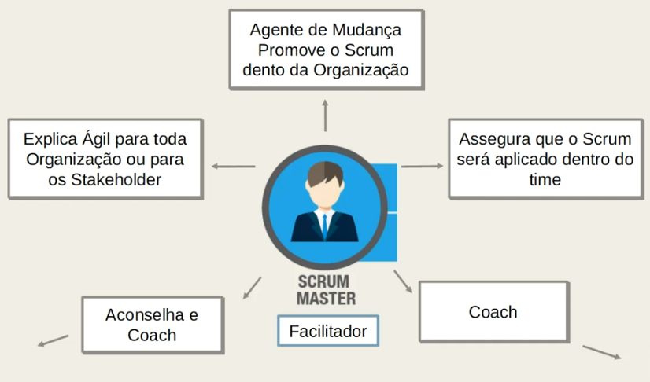

O que é o Scrum ?
O Scrum é um framework de Execução e planejamento de entrega de produtos ou serviços de forma iterativa e incremental
Pilares do Scrum
- Transparencia: Sempre ser transparente com os processos que estão acotecento
- Inspeção: Sempre fazendo inspeção para saber se tudo está dando certo
- Adaptação: E sempre ta fazendo adaptação e colocando coisas novas durante o desenvolvimento
Papeis - Artefatos - Cerimônias
Papeis
Cerimônias
Artefatos
- Product Owener: É responsável por definir e priorizar as funcionalidades e requisitos do produto, garantindo que atendam às necessidades dos usuários e agreguem valor ao negócio. O Product Owner trabalha em conjunto com o Time de Desenvolvimento e o Scrum Master para garantir que o produto seja entregue dentro do prazo e com a qualidade esperada. Em resumo, o Product Owner é o principal responsável pelo sucesso do produto.
- Scrum Master:É responsável por garantir que a equipe de desenvolvimento siga as práticas e valores do Scrum. Ele atua como um facilitador para o time, removendo impedimentos, protegendo a equipe de interrupções externas e ajudando a manter o foco no objetivo da Sprint. O Scrum Master também é responsável por ajudar o Product Owner a manter o Backlog do Produto atualizado e priorizado, além de garantir que a equipe siga as práticas de desenvolvimento ágil, como reuniões diárias, revisão da Sprint e retrospectiva da Sprint.
- Time de desenvolvimento: Eles são compostos por pessoas com diferentes habilidades, como desenvolvedores fronted, beckend, designers, testadores, entre outros, e trabalham juntos para atender aos objetivos da Sprint. O Time de Desenvolvimento é guiado pelo Product Owner, que define as prioridades do produto e os requisitos para cada incremento, e pelo Scrum Master, que ajuda a equipe a seguir as práticas ágeis e a remover quaisquer obstáculos que possam impedi-los de alcançar seus objetivos.
- Planejamento da Sprint: É uma cerimônia realizada no início de cada Sprint na metodologia Scrum. Nessa reunião, o Time de Desenvolvimento e o Product Owner definem juntos os objetivos da Sprint e selecionam os itens do Backlog do Produto que serão desenvolvidos na Sprint. Durante o Planejamento da Sprint, o Time de Desenvolvimento também define como o trabalho será realizado, estima o tempo necessário para cada item do Backlog do Produto e define um plano de ação para a Sprint.
- Reunião Diária: A Reunião Diária, também conhecida como Daily Scrum, é uma cerimônia diária realizada pelo Time de Desenvolvimento no Scrum. Essa reunião tem como objetivo principal permitir que a equipe de desenvolvimento compartilhe informações sobre o progresso do trabalho, identifique impedimentos e defina as atividades que serão realizadas até a próxima reunião diária. A Reunião Diária ocorre no mesmo horário e local todos os dias e tem a duração de no máximo 15 minutos. Durante a reunião, cada membro da equipe responde a três perguntas básicas: O que foi feito desde a última reunião diária? O que será feito até a próxima reunião diária? Existem impedimentos que estão atrapalhando o progresso do trabalho?
- Revisão de Sprint: A Revisão da Sprint é uma oportunidade para a equipe de demonstrar o que foi desenvolvido e obter feedback sobre o trabalho realizado. Durante a Revisão da Sprint, o Time de Desenvolvimento mostra as funcionalidades desenvolvidas e como elas foram implementadas, além de responder a perguntas e receber comentários e sugestões dos participantes. O resultado da Revisão da Sprint é uma lista de itens de Backlog do Produto atualizada e revisada, que servirá como base para o Planejamento da Próxima Sprint. Além disso, a Revisão da Sprint também permite que o Time de Desenvolvimento e o Product Owner avaliem o trabalho realizado e verifiquem se os objetivos da Sprint foram atingidos.
- Retrospectiva da Sprint: A Retrospectiva da Sprint é uma cerimônia importante para a melhoria contínua do processo de desenvolvimento. Ao refletir sobre o que funcionou bem e o que precisa ser melhorado, a equipe pode identificar oportunidades para aprimorar o processo de desenvolvimento e aumentar a eficiência e a qualidade do trabalho.
- Product Backlog: O Product Backlog é uma lista ordenada de requisitos, funcionalidades e melhorias que precisam ser desenvolvidos em um produto. É uma ferramenta
importante no Scrum, pois é a base para a gestão do projeto e orienta o Time de Desenvolvimento durante o desenvolvimento do produto. O Product Backlog é de responsabilidade do Product Owner, que é o responsável por garantir que a lista esteja sempre atualizada e ordenada de forma a maximizar o valor entregue ao cliente.

- Sprint Backlog: O Sprint Backlog é criado em conjunto pelo Time de Desenvolvimento, com a orientação do Scrum Master e do Product Owner. A lista de tarefas é organizada de forma a permitir que a equipe desenvolva as funcionalidades e melhorias de maior valor para o cliente, utilizando a capacidade do Time de Desenvolvimento para a Sprint. Durante a Sprint, o Time de Desenvolvimento se concentra em concluir as tarefas do Sprint Backlog e trabalha de forma colaborativa para garantir que todas as funcionalidades estejam funcionando
- Gráfico Burndown: Em resumo, o gráfico burndown é uma ferramenta de acompanhamento visual que ajuda a equipe Scrum a gerenciar o seu tempo de forma eficiente e identificar possíveis atrasos no desenvolvimento do produto. Ele é atualizado diariamente durante a Sprint e é uma ferramenta valiosa para o Scrum Master e o Product Owner.